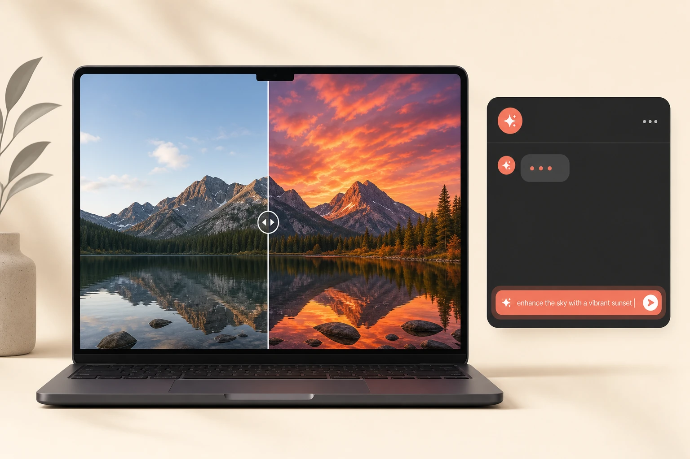

You don't need Photoshop, or even a separate app, to edit a photo anymore. It's already sitting in your browser. One skill makes this actually work.

Most people either skip photo editing entirely because they don't have Photoshop, or they open three apps and still end up with something underwhelming. Gemini removes both problems. Here's the whole workflow:
You have three entry points, and all of them use the same Gemini model underneath. Pick whichever fits your workflow:
This is the single thing that separates a useful edit from a frustrating one. Gemini responds to specificity the same way a human editor would: vague instructions produce vague results, specific instructions produce exact results.
One specific instruction gets one clean edit. Stack multiple changes into a single prompt and the results get muddier. Do them one at a time.
The difference between a prompt that works and one that doesn't usually comes down to whether you named the thing and described the change:
| Vague | "Make this look better" or "enhance this photo" — Gemini guesses what you mean and rarely guesses right. |
| Specific | "Remove the person standing in the background on the left" — one subject, one action, one result. |
| Vague | "Fix the lighting" — fix it how? Brighter? Warmer? Less shadow? |
| Specific | "Make the sky look like a golden hour sunset" — clear subject, clear target state. |
| Vague | "Change the colors" — which element? To what? |
| Specific | "Change the shirt from red to navy blue" — exact element, exact destination. |
These are ready to copy and paste. Swap in the specific details from your own photo where indicated:
Remove the [person / object / sign] in the background and fill it with the surrounding scenery.
Replace the sky with a dramatic golden hour sunset, keeping the foreground lighting consistent.
Change the [shirt / car / bag] from [current colour] to [target colour]. Keep everything else the same.
Remove the [bin / cable / watermark] in the [bottom-left / centre / top-right] of the image.
Brighten the subject's face without changing the background exposure.
There's a lot more sitting in the tools you already have. A short call is enough to find the highest-leverage ones for your specific workflow.
Follow @itsriz for AI tips every single day.